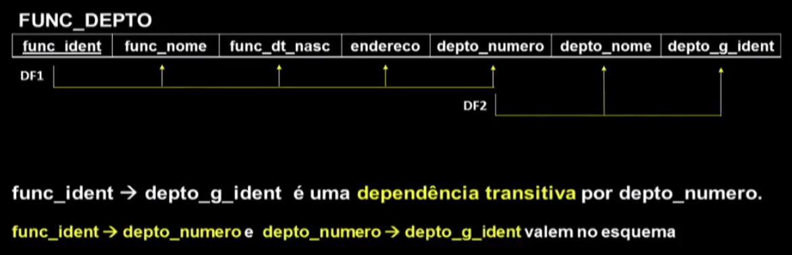
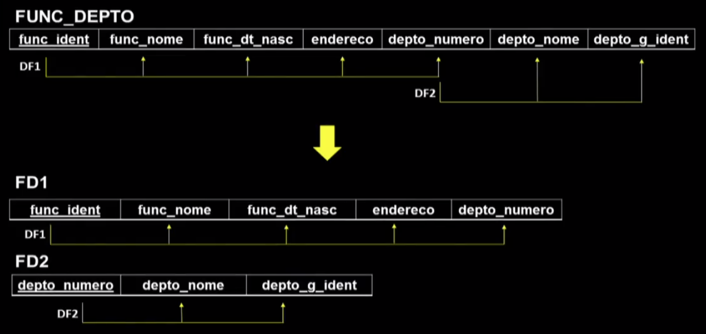
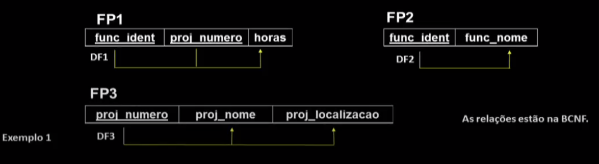
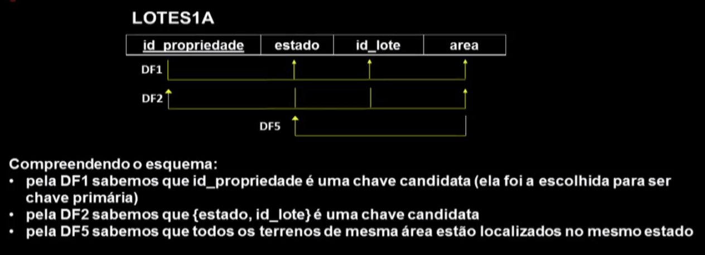
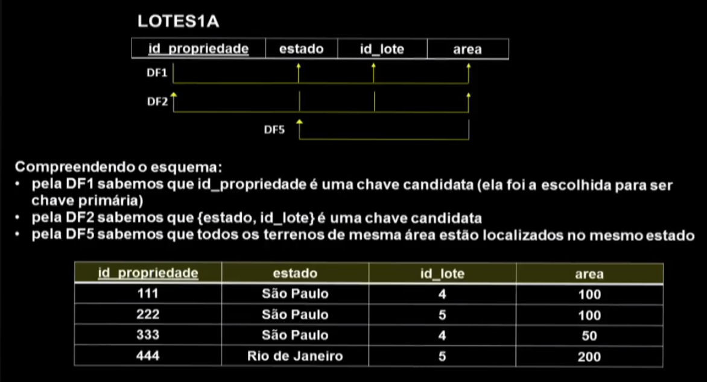
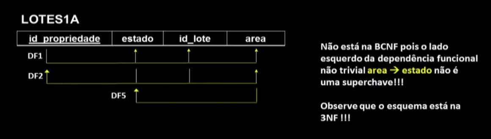
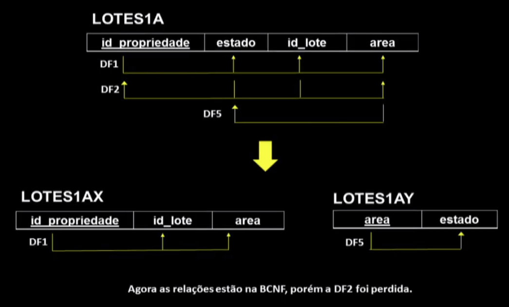

Disciplinas
-
BANCO DE DADOS-T01-2024-1 Concluído
Materiais
Vídeo 3 - Bancos de Dados - Aula 19 - Formas Normais – Parte II. sendProfessor ministrante: Sarajane Peres.
Conteúdo
Formas Normais.
Formas Normais.
Terceira Forma Normal (3NF): é baseada no conceito de dependência transitiva.
- Uma dependência funcional X 🢂 Y em um esquema de relação R é uma dependência transitiva se:
- Existe um conjunto de atributos Zem R,
- Z não é chave candidata e nem um subconjunto de qualquer chave de R, e tanto X 🢂 Z quanto Z Y valem no esquema.
Ex.:
Um esquema de relação R está na 3NF se ele está em 2NF e nenhum atributo não primo de Ré transitivamente dependente da chave primária (ou de qualquer chave) de R.
ou, escrevendo de uma outra forma...
- Um esquema de relação R está na 3NF se todo atributo não primo em R atende ambas condições abaixo:
- a) ele tem dependência funcional total de toda chave de R;
- b) ele é não transitivamente dependente de toda chave de R.
Decompondo o esquema em outros menores, seguindo as dependências funcionais: normalizando o esquema.
Esquema de relação:
Boyce-Codd Normal Form (BCNF):
Um esquema de relação R está na BCNF se sempre que uma dependência funcional não trivial X → A vale em R, Xé uma superchave de R.
Ex. 1:
Ex. 2:
Ex. 3:
Ex. 4:
Ex. 5:
Decompondo o esquema em esquema menores, seguindo as dependências funcionais: normalizando o esquema.
- Propriedades de decomposição relacional.
- É preciso assegurar que cada atributo de R apareça em pelo menos uma relação dentro da decomposição.
- É uma meta ter cada uma das relações da composição em BCNF ou 3NF.
- É desejável preservar as dependências funcionais na decomposição.
- Não é necessário que as dependências funcionais especificadas para o esquema apareçam em relações individuais na decomposição desse esquema. É suficiente que elas possam ser inferidas.
- Se dependências funcionais são quebradas em mais de uma relação, a verificação delas exigirá a execução de operações de junção.
- É preciso assegurar que a decomposição não causará perdas na junção.
- Esta propriedade assegura que tuplas espúrias não sejam geradas quando a JUNÇÃO NATURAL for aplicada nas relações resultantes da decomposição.
- Há casos em que a meta de alcançar uma forma normal precisa ser sacrificada, pois alcançá-la pode levar a uma decomposição com perdas na junção.
Estes slides estão baseados na bibliografia:
Formas Normais – Parte II.